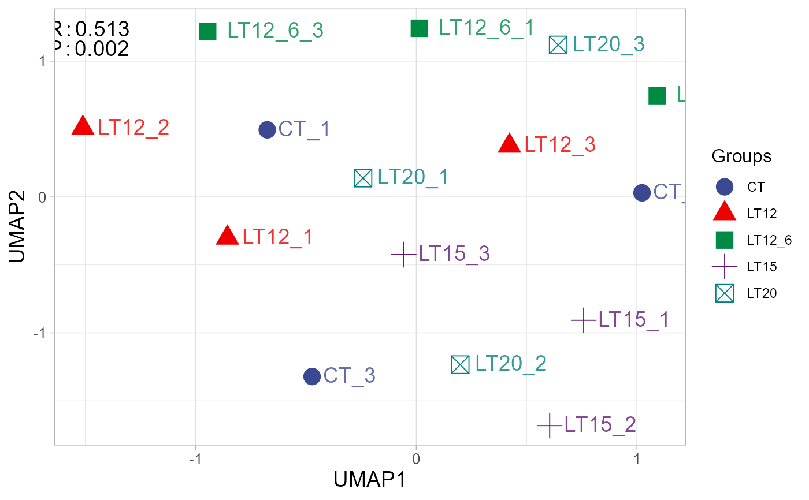
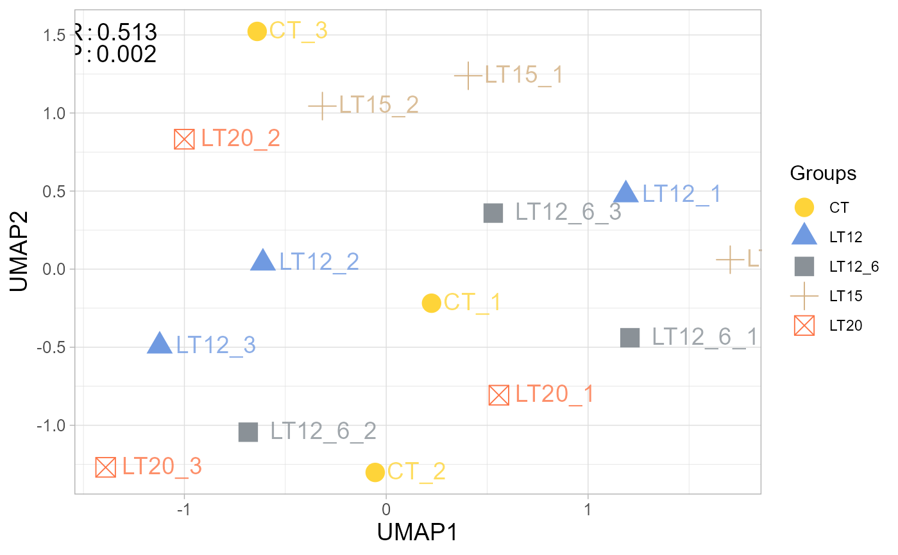
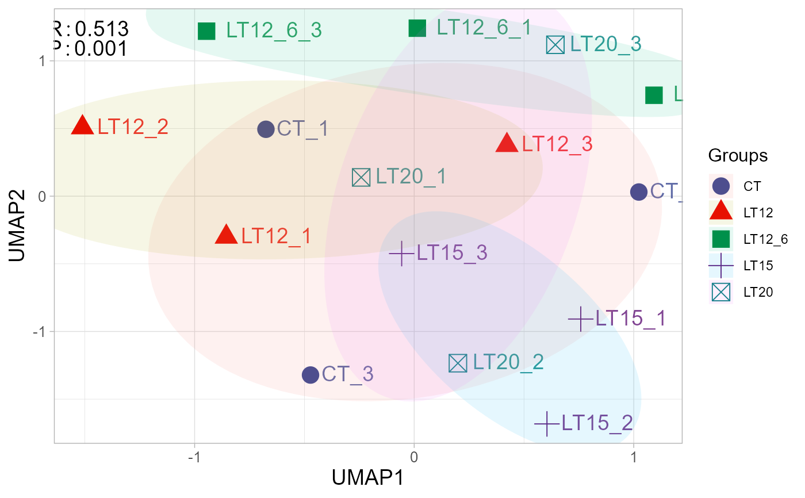

UMAP plot for analyzing and visualizing UMAP algorithm.
Usage
umap_plot(
sample_gene,
group_sample,
seed = 1,
multi_shape = TRUE,
point_size = 5,
point_alpha = 1,
text_size = 5,
text_alpha = 0.8,
fill_alpha = 0,
border_alpha = 0,
sci_fill_color = "Sci_AAAS",
legend_pos = "right",
legend_dir = "vertical",
ggTheme = "theme_light"
)Arguments
- sample_gene
Dataframe: gene expression dataframe (1st-col: Transcripts or Genes, 2nd-col~: Samples).
- group_sample
Dataframe: Samples and groups for gene expression (1st-col: Samples, 2nd-col: Groups).
- seed
Numeric: set seed for robust result. Default: 1.
- multi_shape
Logical: groups as shapes. Default: FALSE, options: TRUE, FALSE.
- point_size
Numeric: point size. Default: 5, min: 0, max: null.
- point_alpha
Numeric: point color alpha. Default: 0.80, min: 0.00, max: 1.00.
- text_size
Numeric: text size. Default: 5, min: 0 (hind), max: null.
- text_alpha
Numeric: text alpha. Default: 0.80, min: 0.00, max: 1.00.
- fill_alpha
Numeric: ellipse alpha. Default: 0.30, min: 0.00, max: 1.00.
- border_alpha
Numeric: ellipse border color alpha. Default: 0.10, min: 0.00, max: 1.00.
- sci_fill_color
Character: ggsci color pallet. Default: "Sci_AAAS", options: "Sci_AAAS", "Sci_NPG", "Sci_Simpsons", "Sci_JAMA", "Sci_GSEA", "Sci_Lancet", "Sci_Futurama", "Sci_JCO", "Sci_NEJM", "Sci_IGV", "Sci_UCSC", "Sci_D3", "Sci_Material".
- legend_pos
Character: legend position. Default: "right", options: "none", "left", "right", "bottom", "top".
- legend_dir
Character: legend direction. Default: "vertical", options: "horizontal", "vertical".
- ggTheme
Character: ggplot2 themes. Default: "theme_light", options: "theme_default", "theme_bw", "theme_gray", "theme_light", "theme_linedraw", "theme_dark", "theme_minimal", "theme_classic", "theme_void"
Examples
# 1. Library TOmicsVis package
library(TOmicsVis)
# 2. Use example dataset
data(gene_expression)
head(gene_expression)
#> Transcripts CT_1 CT_2 CT_3 LT20_1 LT20_2 LT20_3 LT15_1 LT15_2
#> 1 transcript_0 655.78 631.08 669.89 654.21 402.56 447.09 510.08 442.22
#> 2 transcript_1 92.72 112.26 150.30 88.35 76.35 94.55 120.24 80.89
#> 3 transcript_10 21.74 31.11 22.58 15.09 13.67 13.24 12.48 7.53
#> 4 transcript_100 0.00 0.00 0.00 0.00 0.00 0.00 0.00 0.00
#> 5 transcript_1000 0.00 14.15 36.01 0.00 0.00 193.59 208.45 0.00
#> 6 transcript_10000 89.18 158.04 86.28 82.97 117.78 102.24 129.61 112.73
#> LT15_3 LT12_1 LT12_2 LT12_3 LT12_6_1 LT12_6_2 LT12_6_3
#> 1 399.82 483.30 437.89 444.06 405.43 416.63 464.75
#> 2 73.94 96.25 82.62 85.48 65.12 61.94 73.44
#> 3 13.35 11.16 11.36 6.96 7.82 4.01 10.02
#> 4 0.00 0.00 0.00 0.00 0.00 0.00 0.00
#> 5 232.40 148.58 0.00 181.61 0.02 12.18 0.00
#> 6 85.70 80.89 124.11 115.25 113.87 107.69 119.83
data(samples_groups)
head(samples_groups)
#> Samples Groups
#> 1 CT_1 CT
#> 2 CT_2 CT
#> 3 CT_3 CT
#> 4 LT20_1 LT20
#> 5 LT20_2 LT20
#> 6 LT20_3 LT20
# 3. Default parameters
umap_plot(gene_expression, samples_groups)
#> Warning: Unable to calculate text width/height (using zero)
#> Warning: Unable to calculate text width/height (using zero)
#> Warning: Unable to calculate text width/height (using zero)
#> Warning: Unable to calculate text width/height (using zero)
#> Warning: Unable to calculate text width/height (using zero)
#> Warning: Unable to calculate text width/height (using zero)
#> Warning: Unable to calculate text width/height (using zero)
#> Warning: Unable to calculate text width/height (using zero)
#> Warning: Unable to calculate text width/height (using zero)
#> Warning: Unable to calculate text width/height (using zero)
#> Warning: Unable to calculate text width/height (using zero)
#> Warning: Unable to calculate text width/height (using zero)
#> Warning: Unable to calculate text width/height (using zero)
#> Warning: Unable to calculate text width/height (using zero)
#> Warning: Unable to calculate text width/height (using zero)
#> Warning: Unable to calculate text width/height (using zero)
#> Warning: Unable to calculate text width/height (using zero)
#> Warning: Unable to calculate text width/height (using zero)
#> Warning: Unable to calculate text width/height (using zero)
#> Warning: Unable to calculate text width/height (using zero)

# 4. Set sci_fill_color = "Sci_Simpsons", seed = 6
umap_plot(gene_expression, samples_groups, sci_fill_color = "Sci_Simpsons", seed = 6)
#> Warning: Unable to calculate text width/height (using zero)
#> Warning: Unable to calculate text width/height (using zero)
#> Warning: Unable to calculate text width/height (using zero)
#> Warning: Unable to calculate text width/height (using zero)
#> Warning: Unable to calculate text width/height (using zero)
#> Warning: Unable to calculate text width/height (using zero)
#> Warning: Unable to calculate text width/height (using zero)
#> Warning: Unable to calculate text width/height (using zero)
#> Warning: Unable to calculate text width/height (using zero)
#> Warning: Unable to calculate text width/height (using zero)
#> Warning: Unable to calculate text width/height (using zero)
#> Warning: Unable to calculate text width/height (using zero)
#> Warning: Unable to calculate text width/height (using zero)
#> Warning: Unable to calculate text width/height (using zero)
#> Warning: Unable to calculate text width/height (using zero)
#> Warning: Unable to calculate text width/height (using zero)
#> Warning: Unable to calculate text width/height (using zero)
#> Warning: Unable to calculate text width/height (using zero)
#> Warning: Unable to calculate text width/height (using zero)
#> Warning: Unable to calculate text width/height (using zero)

# 5. Set fill_alpha = 0.10
umap_plot(gene_expression, samples_groups, fill_alpha = 0.10)
#> Warning: Unable to calculate text width/height (using zero)
#> Warning: Unable to calculate text width/height (using zero)
#> Warning: Unable to calculate text width/height (using zero)
#> Warning: Unable to calculate text width/height (using zero)
#> Warning: Unable to calculate text width/height (using zero)
#> Warning: Unable to calculate text width/height (using zero)
#> Warning: Unable to calculate text width/height (using zero)
#> Warning: Unable to calculate text width/height (using zero)
#> Warning: Unable to calculate text width/height (using zero)
#> Warning: Unable to calculate text width/height (using zero)
#> Warning: Unable to calculate text width/height (using zero)
#> Warning: Unable to calculate text width/height (using zero)
#> Warning: Unable to calculate text width/height (using zero)
#> Warning: Unable to calculate text width/height (using zero)
#> Warning: Unable to calculate text width/height (using zero)
#> Warning: Unable to calculate text width/height (using zero)
#> Warning: Unable to calculate text width/height (using zero)
#> Warning: Unable to calculate text width/height (using zero)
#> Warning: Unable to calculate text width/height (using zero)
#> Warning: Unable to calculate text width/height (using zero)
